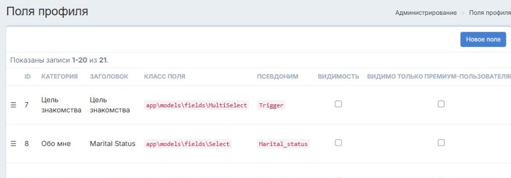
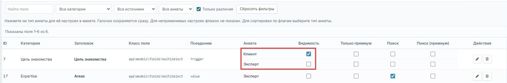

Поля анкет клиентов и экспертов
Согласованные настройки полей. Основное техническое задание ведётся в Google Docs; макет показывает ожидаемую доработку.
- ТЗ для Игоря в Google Docs
- Интерактивный макет страницы полей
- Предпросмотр анкеты, редактирования и поиска
- Инструкция для Codex
- Критерии приёмки
- Скачать комплект ZIP · Копия ТЗ в DOCX
Сейчас
Действующая страница админки, 11 ноября 2026 года. Нет отдельных строк настроек клиента и эксперта.

Как должно быть
Макет: общее поле «Цель знакомства» показано отдельно для клиента и эксперта, настройки видимости различаются.

Предпросмотр показывает, как настройки влияют на анкету, форму и фильтр поиска. Посмотреть пример фильтра.

Макет работает в браузере и не меняет данные сайта. Реализация и серверная приёмка ещё не выполнены.